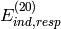
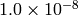
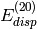
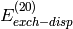
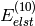
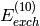
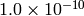
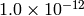

SAPT¶
- DEBUG
Print lots of intermediate quantities that are not usually interesting. For SAPT, it will also do additional work (which is not optimized for large systems) so don’t turn it on.
- Type: integer
- Default: 0
- XXX
xxxxx
- Type:
- Possible Values:
- Default:
- AIO-CPHF
Do disk I/O asynchronously during the solution of the CPHF equations. This option may speed up the computation slightly, however its use will cause |PSIfour| to spawn an additional thread.
- Type: `boolean`_
- Default: FALSE
- AIO_DF_INTS
Do disk I/O asynchronously during the formation of the DF integrals. This option may speed up the computation slightly, however its use will cause |PSIfour| to spawn an additional thread.
- Type: `boolean`_
- Default: FALSE
- BASIS
The basis set used to describe the monomer molecular orbitals.
- Type: string
- Possible Values: Basis Sets
- Default: none
- D_CONVERGENCE
Convergence of the residual of the CPHF coefficients needed for the .
- Type: `conv double`_
- Default: 
- DENOMINATOR_ALGORITHM
Should the energy denominators be approximated with Laplace transformations or a Cholesky decomposition? We have found Laplace transformations to be slightly more efficient.
- Type: string
- Possible Values: LAPLACE, CHOLESKY
- Default: LAPLACE
- DENOMINATOR_DELTA
The SAPT module uses approximate energy denominators for most of the  and  evaluation. This option controls the maximum allowable error norm in the energy denominator tensor.
- Type: double
- Default:

- DF_BASIS_ELST
Optionally, a different fitting basis can be used for the  and  terms. This may be important if heavier elements are involved.
- Type: string
- Default: none
- DF_BASIS_SAPT
The fitting basis to use for all two-electron integrals in the SAPT computation. |PSIfour| will attempt to pick a reasonable fitting basis if one is not provided.
- Type: string
- Default: none
- E_CONVERGENCE
Convergence of the energy change in the term during the solution of the CPHF equations (in hartrees).
- Type: `conv double`_
- Default: 
- FREEZE_CORE
Sets the number of core orbitals to freeze in the evaluation of the and terms. It is recommended to freeze core in all SAPT computations.
- Type: string
- Possible Values: TRUE, FALSE, SMALL, LARGE
- Default: FALSE
- INTS_TOLERANCE
All three-index DF integrals and those contributing to four-index integrals that fall below this Schwarz bound will be neglected. The default is very conservative, however, there isn’t much to gain from loosening it.
- Type: `conv double`_
- Default: 
- MAXITER
The maximum number of CPHF iterations.
- Type: integer
- Default: 50
- XXX
xxxxx
- Type:
- Possible Values:
- Default:
- XXX
xxxxx
- Type:
- Possible Values:
- Default:
- NO_RESPONSE
Don’t solve the CPHF equations, evaluate
 and
and  instead of their response-including
counterparts. Only turn on this option if you are not going to
use the induction energy.
instead of their response-including
counterparts. Only turn on this option if you are not going to
use the induction energy.- Type: `boolean`_
- Default: FALSE
- XXX
xxxxx
- Type:
- Possible Values:
- Default:
The print level for the SAPT module. If set to 0, only the header and final results are printed. If set to 1, some intermediate quantities are also printed. For large SAPT computations, it is advisable to set to 1 so the progress of the computation can be tracked.
- Type: integer
- Default: 1
- SAPT_LEVEL
The level of theory for SAPT.
- Type: string
- Possible Values: SAPT0, SAPT2, SAPT2+, SAPT2+3
- Default: SAPT0
- XXX
xxxxx
- Type:
- Possible Values:
- Default:
- SAPT_OS_SCALE
The SAPT module will print a decomposition of the and terms into same-spin and opposite-spin contributions, in analogy to the SCS-MP2 method of Stefan Grimme. This option controls the scaling of the opposite-spin contributions.
- Type: double
- Default: 6/5
- SAPT_SS_SCALE
This option controls the scaling of the same-spin contributions.
- Type: double
- Default: 1.0/3.0
DUMMY¶
- DEBUG
Print lots of intermediate quantities that are not usually interesting. For SAPT, it will also do additional work (which is not optimized for large systems) so don’t turn it on.
- Type: integer
- Default: 0
- XXX
xxxxx
- Type:
- Possible Values:
- Default: